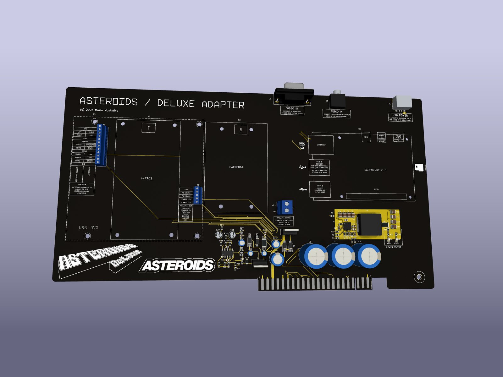
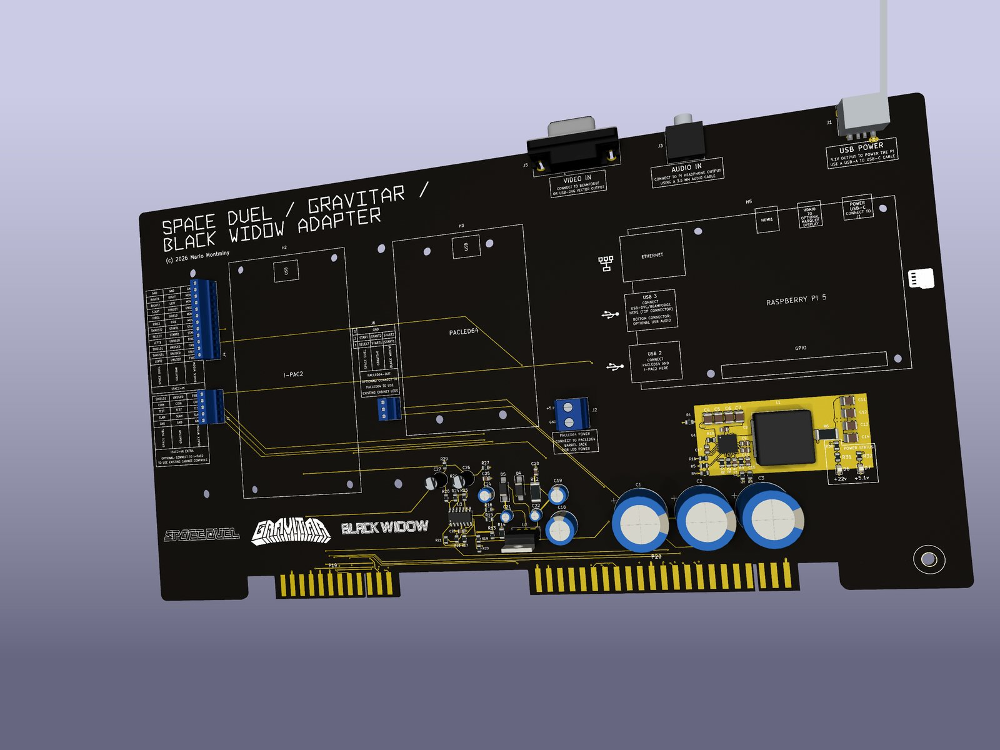

Cabinet Adapters
A cabinet adapter lets a VectorPie system (a Raspberry Pi with a BeamForge or USB-DVG board) run in an original cabinet, with no cabinet modifications. Each adapter goes on sale only after its design is validated. Leave your email to hear when it does.
Order: the Asteroids adapter first, then the Space Duel adapter.

Asteroids / Asteroids Deluxe Adapter
Item BF-AST
Expected price: plus shipping
Bring VectorPie to your Asteroids or Asteroids Deluxe cabinet while keeping its original controls, start-button lights, vector monitor and audio amplifier.
The adapter connects to the cabinet’s existing edge connector and accepts vector signals from BeamForge or USB-DVG. Its onboard power supply converts the cabinet’s AC transformer supply into power for the Raspberry Pi, while the audio circuit connects the Pi’s audio output to the original Atari amplifier.
Clearly labelled screw terminals show the connections for each cabinet, with optional Ultimarc I-PAC2 support for the controls and Ultimarc PACLED-64 support for the start-button LEDs. Mounting positions for the Raspberry Pi, USB-DVG and both Ultimarc boards help keep the installation organised. A QR code on the back links directly to the installation instructions.
Specifications
What's in the box
You also need
- A BeamForge assembly on a Raspberry Pi running VectorPie, or an original USB-DVG. The adapter has mounting for either.
- With a Pi 5: a USB audio dongle with a 3.5 mm output. A Pi 4 can use its own headphone output.
- Optional, for the original controls: an Ultimarc I-PAC2.
- Optional, for the original button lights: an Ultimarc PACLED64 and a 5.5 × 2.1 mm DC barrel-plug lead.
- For each Ultimarc board: 4 × M3 male-female standoffs, 10 mm, with M3 × 6 mm screws and nuts.
See the installation guide for wiring, controls and installation steps.

Space Duel / Gravitar / Black Widow Adapter
Item BF-SD
Expected price: plus shipping
Bring VectorPie to your Space Duel, Gravitar or Black Widow cabinet while keeping its original controls, lights, vector monitor and audio amplifier.
The adapter connects to the cabinet’s existing edge connector and accepts vector signals from BeamForge or USB-DVG. An onboard power supply powers the Raspberry Pi from the cabinet’s transformer supply, while the audio circuit connects the Pi’s audio output to the original cabinet amplifier.
Clearly labelled screw terminals let you connect an optional Ultimarc I-PAC2 for the cabinet controls and Ultimarc PACLED-64 for the existing cabinet LEDs. Mounting positions for the Raspberry Pi, USB-DVG and both Ultimarc boards help keep the installation organised. A QR code on the back links directly to the installation instructions.
Specifications
What's in the box
You also need
- A BeamForge assembly on a Raspberry Pi running VectorPie, or an original USB-DVG. The adapter has mounting for either.
- With a Pi 5: a USB audio dongle with a 3.5 mm output. A Pi 4 can use its own headphone output.
- Optional, for the original controls: an Ultimarc I-PAC2.
- Optional, for the original button lights: an Ultimarc PACLED64 and a 5.5 × 2.1 mm DC barrel-plug lead.
- For each Ultimarc board: 4 × M3 male-female standoffs, 10 mm, with M3 × 6 mm screws and nuts.
See the installation guide for wiring, controls and installation steps.